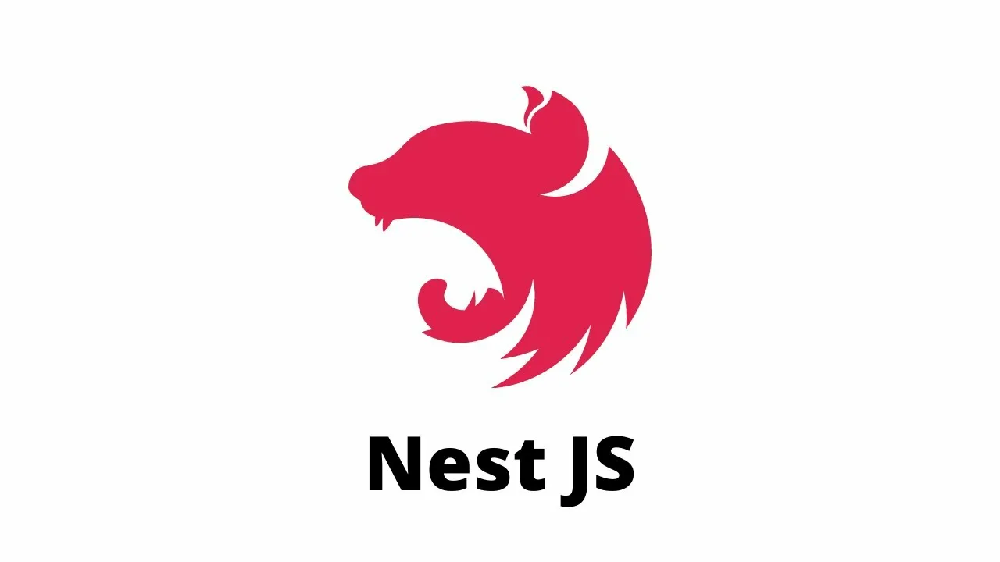

Fastify
Fastify
NestJS
Прогрессивный Node.js фреймворк для создания эффективных, надёжных и масштабируемых серверных приложений. Вдохновлён архитектурой Angular.

Версия
10.x (стабильная)
Еженедельные загрузки
~2.5 млн (npm)
Производительность
~20k req/s (с Fastify адаптером)
Используют
PayPal, Roche, Adidas
Что такое NestJS?
NestJS — это фреймворк для создания масштабируемых серверных приложений на Node.js с использованием TypeScript (и чистой JavaScript).
Он сочетает в себе элементы ООП, функционального и реактивного программирования. Под капотом NestJS использует Express или Fastify (через адаптер) и предоставляет архитектурные паттерны, вдохновлённые Angular: модули, контроллеры, провайдеры и внедрение зависимостей.
NestJS делает разработку на Node.js структурированной, удобной для тестирования и сопровождения, идеально подходит для enterprise-проектов и микросервисов.

Ключевые особенности
Модульная архитектура
Организация кода в модули (Modules), что упрощает масштабирование и переиспользование.
Внедрение зависимостей
Мощный DI-контейнер, вдохновлённый Angular, для управления зависимостями.
TypeScript first
Полная поддержка TypeScript из коробки с декораторами и строгой типизацией.
Микросервисы
Встроенная поддержка микросервисной архитектуры и событийного обмена.
Производительность
Возможность использовать Fastify под капотом для максимальной скорости.
Графики и WebSockets
Легкая интеграция GraphQL, WebSockets, gRPC и других протоколов.
Быстрый старт с NestJS
Контроллер, модуль и запуск за 5 минут
import { Controller, Get, Post, Body, Injectable, Module, NestFactory } from '@nestjs/common';
// Провайдер (сервис)
@Injectable()
export class AppService {
getHello(): string {
return 'Hello from NestJS!';
}
}
// Контроллер
@Controller()
export class AppController {
constructor(private readonly appService: AppService) {}
@Get()
getHello(): string {
return this.appService.getHello();
}
@Post('/data')
createData(@Body() body: any) {
return { received: body };
}
}
// Модуль
@Module({
controllers: [AppController],
providers: [AppService],
})
export class AppModule {}
// Запуск приложения
async function bootstrap() {
const app = await NestFactory.create(AppModule);
await app.listen(3000);
}
bootstrap();
Плюсы и минусы
Преимущества
- 🏗️ Структурированность — готовые архитектурные паттерны (модули, контроллеры, сервисы)
- 📘 TypeScript из коробки — декораторы, метаданные, отличная типизация
- 🧩 Внедрение зависимостей — облегчает тестирование и переиспользование кода
- 🔌 Экосистема — официальные модули для GraphQL, WebSockets, микросервисов
- 💼 Enterprise-ready — отличный выбор для крупных команд и проектов
Недостатки
- 📈 Кривая обучения — новичкам может показаться сложным из-за концепций (модули, декораторы, DI)
- 🏋️ Структура требует дисциплины — не подходит для мельчайших API, где нужен минимум кода
- ⚙️ Более тяжеловесный — по сравнению с Express/Koa требует больше кода и конфигурации
- 🐢 Медленнее чистой альтернативы — при использовании Express адаптера уступает Fastify по скорости
Часто задаваемые вопросы
Да, но для микросервисов или небольших API он может быть избыточным. Если нужна быстрая разработка прототипа, Express или Fastify будут проще. Однако NestJS отлично масштабируется, и начальные инвестиции окупаются при росте проекта.
Да! NestJS имеет адаптер для Fastify. Вы можете переключиться, вызвав NestFactory.create<NestFastifyApplication>(AppModule, new FastifyAdapter()). Это повысит производительность вашего приложения.
Декораторы — это специальные аннотации (например, @Controller(), @Get(), @Injectable()), которые добавляют метаданные классам и методам. Они позволяют NestJS определять маршруты, внедрять зависимости и настраивать поведение приложения декларативно.